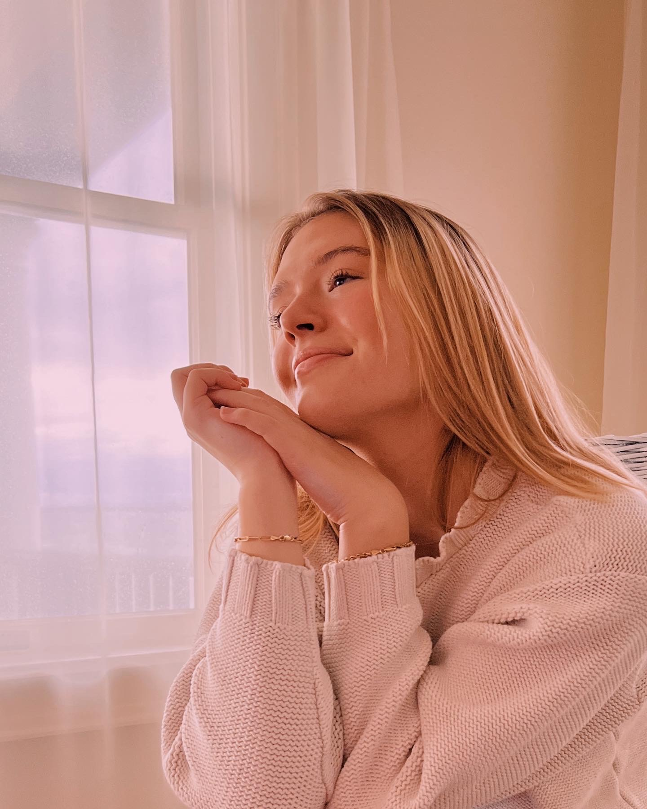
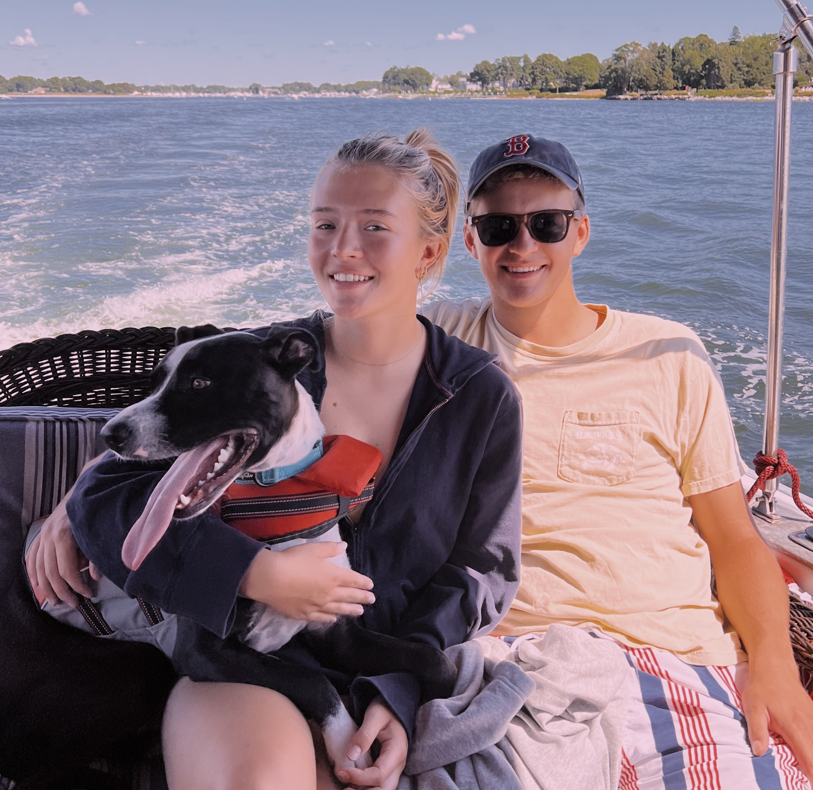
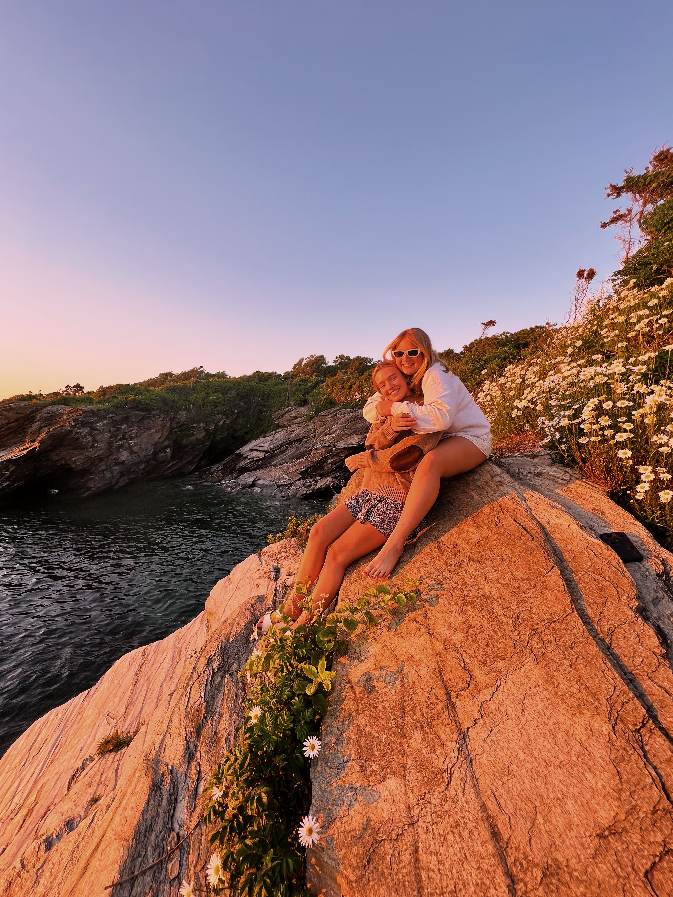

I have had so many jobs in my life becuase of my efferts to always challege myself and grow. I used to work in the food industry, and in home child care.Right now I am working as a tour guide at Elon. I love my job, it is so fun to meet new people and show them around a school I love so much. Over the summer, when I go home to Rhode Island, I work at a summer camp. I am head counselor of a camp for 3-5 year olds. I also love working there, kids are so fun! Plus I get to spend the summer by the beach. In 2021 I completed an intership. It was a great experience and I learned so much. It was at a marketing and adversiting firm. It was an amazing oppertunity. This intership is how I chose when to study at university. I enjoy playing field hockey and photography. I am trying to get more involved on campus. I enjoy going to cultural events on campus. I am also a Senator and the Cheif of Staff on student government. I will be running for Student Body President next year. I am excited to see what the future holds! I hope I am living somewhere near the beach.
  